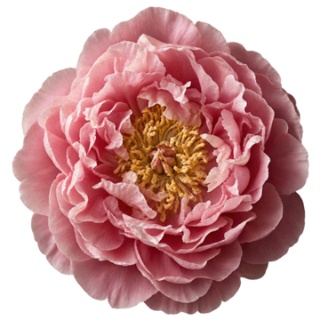
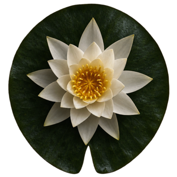
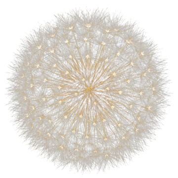
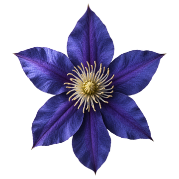

One ripple only makes a bud stir.
Tap the pond and a ring spreads across the water. A bud it passes trembles, but holds. Tap from the other side at the same moment and the two rings meet on it. It opens, bursts into petals, and sends out a bright ring of its own.
That bright ring opens any bud close enough. Clusters go off like dominoes, the chain count climbs, and every tap plays a note in key with the music. The whole thing takes both thumbs and all your attention, which is the point.

Made for the worst ten minutes.
Urges rise, peak and pass. The hard part is what to do with your hands and your head while you wait. Before a round you rate how strong the urge is, from one to ten. After, you rate it again. Over time the app shows you how much it drops while you play, in your own numbers.
It works for whatever you are trying to leave behind. The app never asks what that is.

A garden that grows with every clean day.
Set your start date and the count begins. Each clean day plants a flower in your garden, and new kinds arrive at milestones: poppies at three days, water lilies at two weeks, dandelions at a month, moonflowers at a year.
If you slip, the count starts again from today. Nothing in your garden is taken away.

Forty puzzle ponds.
Each pond is a fixed arrangement of buds and a small number of ripples to clear it with. Find where two rings would cross on the right bud, and where its bloom would reach, and the whole pond goes in one move. Three blossoms for clearing it at par.
Every three ponds brings a new flower, announced by name the first time it floats in.

Nothing leaves your phone.
There is no account to make and nothing to sign in to. Your ratings, your clean days and your garden are stored on your phone and nowhere else.
- AccountNone
- AdsNone
- Analytics or trackingNone
- Data collectedNone
- Works offlineYes
- RequiresiPhone, iOS 17 or later